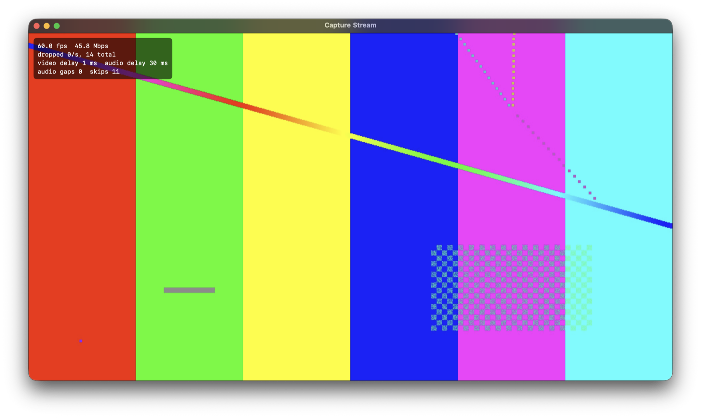
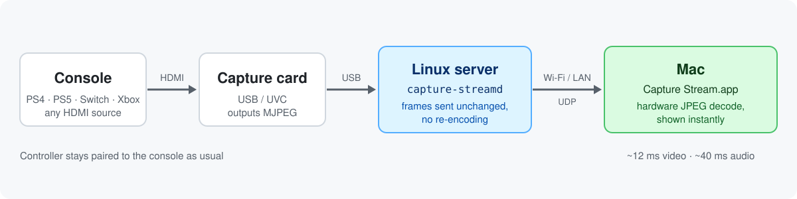
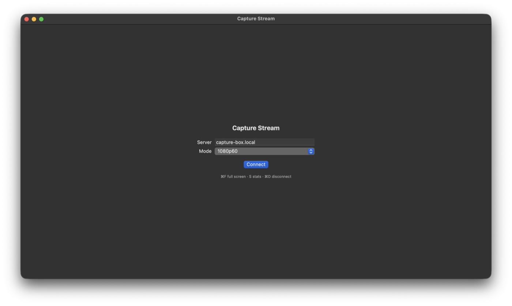

capture-stream sends the picture and sound from a USB HDMI capture card on a Linux box to a native Mac app, with about 12 ms of video delay. PS4, PS5, Nintendo Switch, Xbox or any HDMI source.
Free and open source (MIT) · macOS 14+ on Apple Silicon · Linux server


Game-streaming tools like Sunshine and Moonlight expect a PC running the game. With a capture card they have to decode the card's video, show it on a screen, grab that screen and encode it again, adding delay at every step. Most USB capture cards already send compressed MJPEG frames, so capture-stream forwards them unchanged and decodes them once, on the Mac, with Apple's hardware JPEG decoder. Your controller stays paired to the console.
The card's MJPEG frames go straight through. The server uses about 30% of one core, even on an old i5.
No playback clock and no frame queue: each frame appears the moment it's decoded, so delay can't build up.
A frame with a lost packet is dropped instead of being shown broken.
Raw PCM with a ~20 ms buffer that skips ahead if it ever holds more than 60 ms.
Pick a mode per session, or define your own in the server config.
Press S for fps, bandwidth, dropped frames and video/audio delay.
Measured on a 2017 Intel i5 server with a MacroSilicon MS2109 USB capture card, streaming to an Apple Silicon MacBook over 5 GHz Wi-Fi.
| 720p60 | 1080p60 | |
|---|---|---|
| Video delay (server → decoded on the Mac) | ~12 ms | 9–15 ms |
| Audio delay (server → speakers) | ~35–50 ms | 45–62 ms |
| Dropped frames | 0 | 0 |
| Bandwidth | 35–55 Mbps | 70–145 Mbps |
Excludes the capture card's own delay (typically 1–3 frames) and your display.
git clone https://github.com/dylenq/capture-stream
cd capture-stream/server && ./install.sh~/.config/capture-stream/config.toml.
No capture card yet? Run python3 server/capture-streamd.py --demo to stream a test pattern, then connect to it.
Yes. Connect the console's HDMI to a USB capture card on a Linux machine, run capture-streamd and connect with the Mac app. Turn HDCP off on the console first (PS4: Settings → System → Enable HDCP), or the card captures nothing.
For capture cards, yes: it sends the card's frames straight to the Mac instead of showing and re-encoding them. For games running on a PC, use Sunshine and Moonlight.
Any UVC (driver-free) USB capture card that outputs MJPEG, which covers most inexpensive HDMI-to-USB cards. USB 2.0 cards like the MS2109 do a true 60 fps at 720p and about 57 fps at 1080p.
Not yet. The server runs on Linux and the client is macOS on Apple Silicon. The protocol is small and documented, so other clients are possible.
It's designed for a home network: it needs 35–145 Mbps and has no authentication, so don't expose it to the internet.